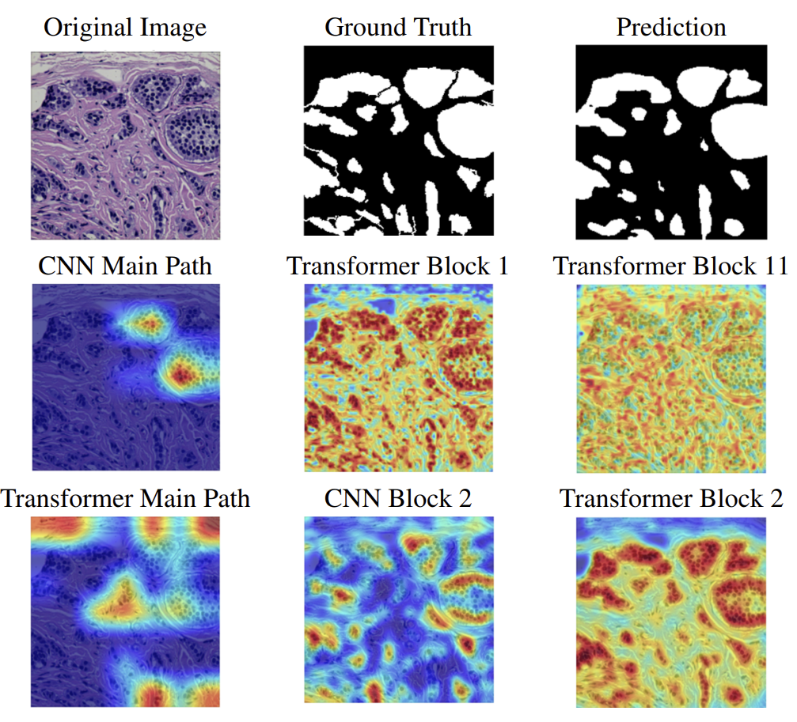

Anh-Minh Phan

|
Hi, I'm Anh-Minh! 👋
"I study Mixture-of-Experts (MoE) for adaptive learning from heterogeneous views."
Currently seeking Master/PhD opportunities (2025/2026). Feel free to reach out! |
Education & Experience
-
 B.E. in Electronics and Telecommunications (2021 — 2025)
B.E. in Electronics and Telecommunications (2021 — 2025)
Ho Chi Minh University of Technology (VNU-HCM)
GPA: 3.24/4.0 (Very Good Degree - Top 21/267 students with Very Good classification or above)
Major focus: digital signal processing, computer vision systems (segmentation, detection). -
Teacher Assistant (Aug 2024 — present) (If you are an AIO member, don't hesitate to reach out!)
AI Việt Nam
Mentoring junior students on machine learning, computer vision, and Internet of Things.
News
- [2026.04] New paper "Split-Aware Learning for IoT Intrusion Detection" submitted for review!
- [2026.04] SAGE paper accepted to CVPR 2026 Findings!
- [2025.11] Paper on multimodal video retrieval accepted to SoICT 2025!
- [2025.02] Paper on multi-camera tracking accepted to MAPR 2025!
Publications [selected | all ]
|
 |
SAGE: Shape-Adapting Gated Experts for Adaptive Histopathology Image Segmentation |
|
|
Split-Aware Learning for IoT Intrusion Detection under Temporal Domain Shift |

|
Enhancing Multi-Camera People Tracking with Conflict-aware Cosine Tracking and Human Matching Re-assignment |

|
Enhanced Multimodal Video Retrieval System: Integrating Query Expansion and Cross-modal Temporal Event Retrieval |